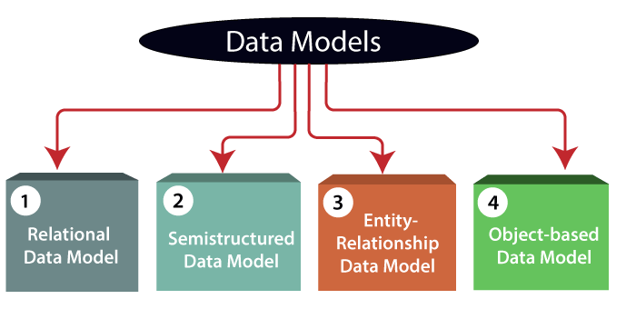

Data Model is the modeling of the data description, data semantics, and consistency constraints of the data. It provides the conceptual tools for describing the design of a database at each level of data abstraction. Therefore, there are following four data models used for understanding the structure of the database:
| Model | Description |
|---|---|
| Relational Data Model | 1) Relational Data Model: This type of model designs the data in the form of rows and columns within a table. Thus, a relational model uses tables for representing data and in-between relationships. Tables are also called relations. This model was initially described by Edgar F. Codd, in 1969. The relational data model is the widely used model which is primarily used by commercial data processing applications. |
| Entity-Relationship Data Model | 2) Entity-Relationship Data Model: An ER model is the logical representation of data as objects and relationships among them. These objects are known as entities, and relationship is an association among these entities. This model was designed by Peter Chen and published in 1976 papers. It was widely used in database designing. A set of attributes describe the entities. For example, student_name, student_id describes the 'student' entity. A set of the same type of entities is known as an 'Entity set', and the set of the same type of relationships is known as 'relationship set'. |
| Object-based Data Model | 3) Object-based Data Model: An extension of the ER model with notions of functions, encapsulation, and object identity, as well. This model supports a rich type system that includes structured and collection types. Thus, in 1980s, various database systems following the object-oriented approach were developed. Here, the objects are nothing but the data carrying its properties. |
| Semistructured Data Model | 4) Semistructured Data Model: This type of data model is different from the other three data models (explained above). The semistructured data model allows the data specifications at places where the individual data items of the same type may have different attributes sets. The Extensible Markup Language, also known as XML, is widely used for representing the semistructured data. Although XML was initially designed for including the markup information to the text document, it gains importance because of its application in the exchange of data. |